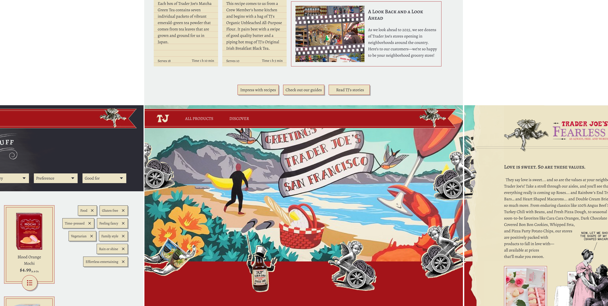

Background
Kidsteam stuff - journal photos
Brainstorming & storyboarding
Pictures, Connect key elements to research ...
My goal:
The goal
Note that this interface is NOT a video game. It is ...
Prototype
Prototype - Flow for a new user

Color and Imagery
My color palette is minimal to reflect simplicity and to highlight Trader Joe's colorful packaging and artwork. The primary red is derived from Trader Joe's branding and adjusted for optimal contrast as a background for text. The neutrals reference paper and ink. A major color block will come from the hero mural. Here, the teal with the brand red is creating a color scheme similar to complementary.
Image treatments include ink or pigmented wood block cut style illustrations, chalkboard artwork and Victorian cartoon illustrations remixed with Trader Joe's products.
The base materials of this interface are card paper, note paper and chalkboard. UI components are styled accordingly.
Typography
Primary type family: Alegreya
Serif typeface referencing print, optimized for digital readability.
Accent typeface: Chalk-hand-lettering-shaded_dem
For accent headings with a chalkboard penmanship effect.
Accent typeface: Gorton Digital
For speech blurbs with remixed Victorian cartoons.
These are intended for use with the typefaces in the branding for Trader Joe's and the Fearless Flyer, which I will not change.
The existing website uses at least four typefaces of different styles, appearing cluttered. My choice of Alegreya allows me to have almost all of my text in a single type family. Alegreya's versatility of styles and letterform variations lends the right amount of personality.
Language
Draws on dialogs in childrens' storyboard
Signage, packaging and articles feature language that is playful, humorous, punny and occasionally uses fancy words.
Conversation with crew members is warm, friendly and considerate. Cashiers will ask, "Did you find what you were looking for?"
Prototyping process
The layout for desktop is based on a 12-column 4px grid. I took inspiration from the UIs of exploration games and other websites with exploratory elements.
The pages of the website are laid out spatially to reflect the physical experience of being in a Trader Joe's store. The layout is communicated by directional navigation buttons and push transitions. The artwork in the hero section greets the visitor on arrival like the mural in each store. The Fearless Flyer is on the right of the landing page. The product catalog is on the left and the "discover" page is above.
Based on the visitor's detected location, the mural will change to represent the town of the nearest Trader Joe's, giving a neighborly feel.
The landing page is set up for discovery of new or featured products using interactive illustrations remixed with product images.
Summary
The redesign captures the feel of visiting a Trader Joe's store while also introducing a cohesive design system.
- Peeking illustrations on the landing page for new, seasonal and featured products.
- Mural artwork featured on the landing page
- Cohesive typography and layout
- Simple color palette to highlight beautiful product packaging
- Mural on the landing page featuring local culture and attractions
- Warm language - also done well on the existing website
- Single-level spatial navigation with clear cues
- Minimal color palette
- Less content per page
Learnings & Continuing Work
- Simplicity can be achieved with more than one typeface. I had initially restricted myself to only using the Alegreya type family, but it was lacking in visual effect. I then introduced the chalk-effect display typeface which does not take away from readability because of its high contrast and highly contextual use. At the same time, it adds personality by referencing Trader Joe's chalk art signboards.
- With more time, I would have liked to prototype more micro-interactions with existing UI elements.
- I would also have integrated more woodcut-style illustrations into the website. That is something I liked about the existing website, and I would have liked to bring it over with improvements to scaling and color treatment.
- Another drawback I identified in the existing website is that the screens simply reflow on mobile without re-organization of content. I would have liked to design mobile screens with appropriate prioritization of content.